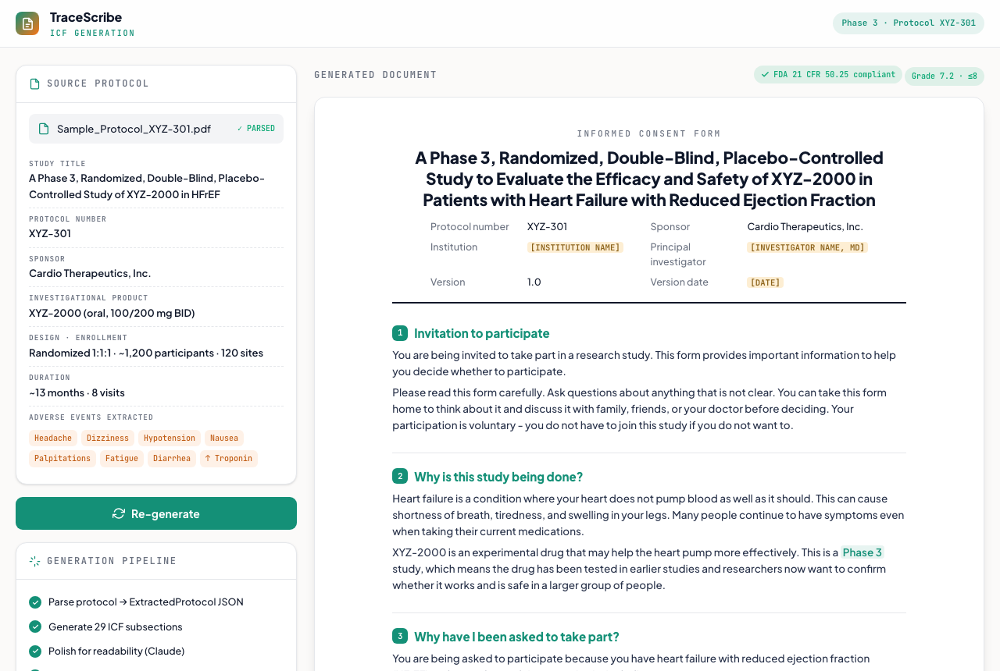

ICF Generation
Turn a clinical-trial protocol into an FDA-compliant, plain-language Informed Consent Form. This is the document-generation feature from TraceScribe - a clinical-AI SaaS platform - recreated here as a standalone, in-browser demo.
Launch live demo
Runs in your browser
What it does
Parses a study protocol and generates a complete Informed Consent Form - every FDA 21 CFR 50.25 required element, written at a 6–8th-grade reading level, with site-specific fields left as placeholders for each investigator to complete.
How it works
- Extracts the protocol into structured data, then generates 29 focused ICF subsections.
- Polishes for readability and converts medical jargon to plain language (e.g., "randomized" → "assigned by chance", "double-blind" → "neither you nor your doctor knows").
- Validates compliance - all required elements present, risks organized by frequency, no exculpatory or coercive language, every protocol adverse event covered.
- Translates the finished consent form into other languages with a Translate menu (the demo ships Spanish, French, German, and Chinese).
FDA 21 CFR 50.25Plain language
TranslationLLM
The demo runs on a sample protocol (XYZ-301, a Phase 3 heart-failure study). In the full TraceScribe app the result renders to a formatted .docx and can be translated into 10 languages.

Static preview - click to open the live, interactive demo